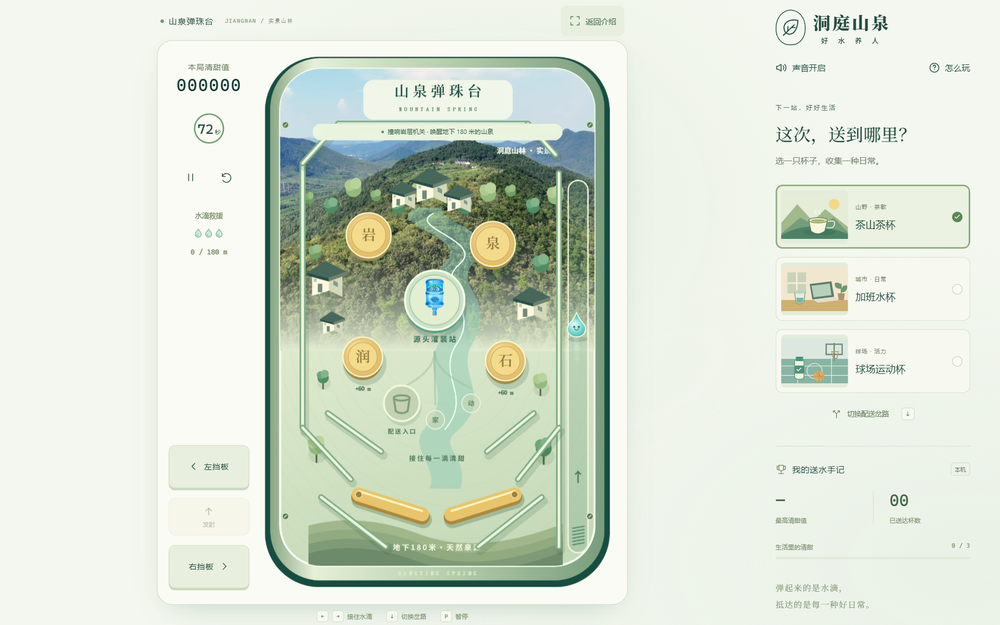

洞庭山泉 · 山泉弹珠台：把一滴山泉送进生活
一滴来自地下 180 米的山泉，怎样抵达生活中的杯子？这个浏览器弹珠小游戏把出泉、灌装和配送串成一局旅程：你用左右挡板控制水滴，在江南山城的球台上撞响机关，最后把它送往茶山、办公室或球场。

一局送水怎么完成
点击“开始送水”或按空格发射。每次击中金色岩层机关上升 60 米，累计 180 米后，中央灌装站亮起；再击中灌装站，才会开启配送入口。选择目的地后，让水滴进入发光岔路，就完成了从山泉到杯子的送达。
一局最长 72 秒，并提供 3 次掉落救援。茶山茶杯、加班水杯和球场运动杯可以在游玩时切换；结算后也能切换展示场景，本局分数、耗时与已送达杯数保持不变。
球台、声音与输入
游戏使用 TypeScript、Vite、Canvas 2D 和 Web Audio。物理以固定时间步推进，让重力、斜轨碰撞和挡板模拟与画面渲染分开；山林与商品使用真实图片，村落、轨道和水滴由 Canvas / SVG 绘制。碰撞产生音符，进杯时组成水声旋律。
桌面可用方向键或 A、D 操作挡板，手机按钮支持同时按住左右两侧。球台等比缩放，并提供放大、暂停、静音和减少动态效果设置。最高分、最快耗时与杯子收集只保存在当前浏览器，不跨设备同步。
继续了解
项目为纯前端应用，无需后端服务。完整操作表、运行方式和素材说明见 项目 README。